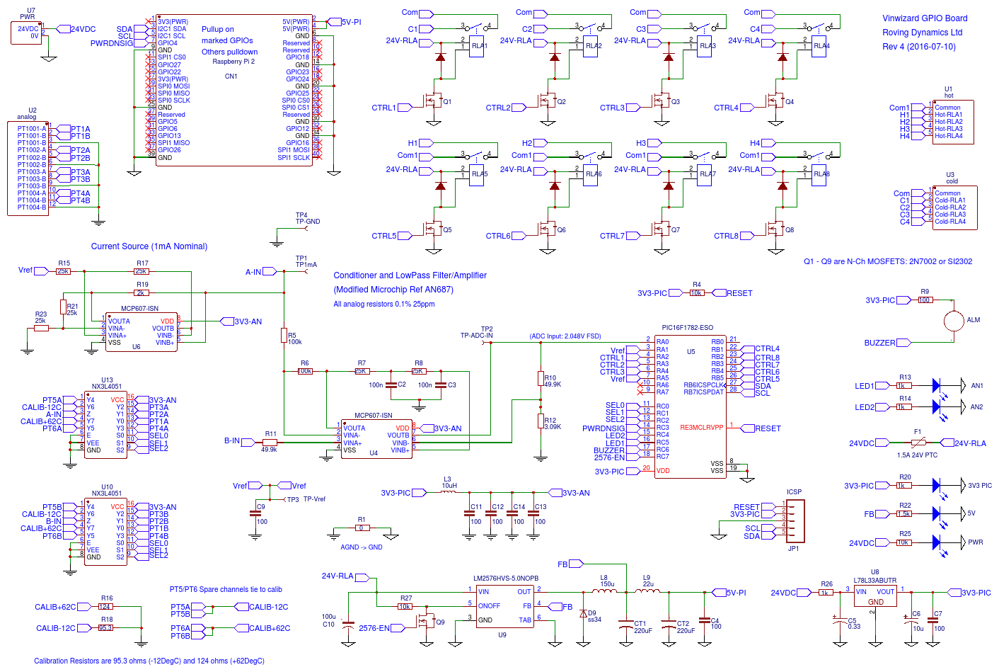

I have recently completed this project. It has the same specification as the previous post however a few improvements have been made in light of new information.
The board is intended to accurately control the temperatures of 4 wine tanks using PT100 temperature probes and actuating either a heat relay (if tank too cold) or a cool relay if tank to hot. The control program to do this is run on a Raspberry Pi (R2 or R3) which the board will house and provide power and control.
The prototype is shown below with a Raspberry Pi 3 attached
Big thanks to David at Wine technologies for letting me publish this design, though it may not be of use to many of you guys some of the principles may help you develop your own system.
The test system has been powered on over several days to check for basic operability.
There is no supervisory program for the raspberry Pi as each persons use will be different, however a test program in C++ is provided for the Raspberry Pi which will read temperatures and set relays and it should be pretty easy from there to get started, anyway enough waffling, the full documentation is below:

https://easyeda.com/rodyne/RPI_GPIO_Motherboard_Rev_5-yUO6oiAR9
Sensors
The board connects to four 3-wire PT100 temperature sensors. Each sensor is connected through a low resistance analog multiplexer and polled every few seconds and the resistance of the selected PT100 (see table) is converted to a voltage by passing a constant current though it of around 1mA (programmable under firmware). The voltage is conditioned to remove cable resistance and noise and then passed through a low pass filter (which has a 3dB cut-off at 15Hz) and amplified and sent to the input of a 12 bit ADC. Internally two channels of an input multiplexer are connected to calibration resistors so 6 channels are available if required (only 4 are used in this design as I could not fit more relays on!).
Note the hardware conditioning circuit and firmware are optimised for a temperature range of -12 to +62 DegC, based on the two calibration resistors changes to the firmware would be required to change that range. On power on the firmware will calibrate the Vref to bring it close to the ADC maximum to give the best performance this normally takes about 20 seconds.
The calibration resistors are connected via the NX3L4051 8 channel mux and all channels output to the same conditioning circuit this means we can connect known resistances to a channel and calibrate the output of the ADC to some degree of accuracy (and more importantly automatically). There will be a small error depending upon how constant the analog multiplexers resistance matching value is. The analog multiplexer chosen has a maximum error between channels of 0.13 ohm which corresponds to about 0.3 DegC so this is the maximum accuracy of the circuit without external calibration. Having calibration resistors means we can find the temperature in software simply by taking the two know end points and using them to calculate the PT100 sensor ADC reading without too many worries about drift etc. (Note my customer are now using a more accurate Texas Instruments analog switch the TS3A44159 which has only 70 mili-ohms max resistance between channels if you require better accuracy)
Output Relays
Outputs from the board are from 8 x SPST Relays (Omron G5NB-1A-E) these are set in two banks of 4 relays with a common connection. Each relay is connected through a CPU output pin and can be individually turned on or off . Due to PCB size constraints and proximity of tracks and relays to board edge the relays outputs should be restricted to 24V@3A if used in the prescribed aluminium enclosure.
Power Supply and Controller
The board is controlled by a PIC16F1782 (8-bit) micro controller, the micro controller has its own 3.3V regulated supply and consumes <10mA during normal operation. The 3.3V is provided by a 78L33 LDO connected directly to the 24V supply through a 1K limiting resistor. It does not go through the poly fuse.
The Raspberry Pi is powered through its GPIO header from a 5V switched mode supply. The 5V supply is fused on the input via a 1.5A poly fuse during normal operation the Rpi consumes under 100mA from this supply. The LM2576-5 can supply up to 3A. Additional filtering of the 5V is provided by the 22uF inductor and 220uF capacitor.
The system expects to be powered from an industrial 24V DC supply and will draw around 100-120mA during normal operation. The Rpi may draw more transient current during heavy CPU load so the 24V supply should be rated to 1A minimum.
The on board micro controller does the following functions:
- Selects the correct analog multiplexer channel and process the corrected and amplified analog voltage from the PT100 or calibration resistor through its ADC converting to temperatures if required.
- Controls the enable pin to the LM2576 regulator to turn the RPi on and off.
- Sends a power down signal to the Raspberry Pi 10 seconds before power down
- Controls the 8 relays
- Emulates an I2C slave for the Rpi so the Rpi can read temperatures and control relays.
- Provides control of a buzzer alarm and two diagnostic LEDs
Raspberry Pi
The Raspberry Pi is connected to the board through its 40 pin GPIO header, this means it is restricted to the Model 2 and model 3 boards, the model 1 board had a smaller header and is incompatible.
When 24V power is supplied to the board the micro controller initialises and turns on the 5V for the Rpi so it can boot. All the relays are turned off and the micro controller begins polling the PT100 channels and storing the ADC readings and temperatures.
The board looks to the Rpi like an I2C slave with a fixed address of 0x05 and 40 x 8-bit registers which are described below
I2C Register Definitions
The board provides 40 x 8 bit addresses to the Rpi which control its operation, all can be read and written to without causing error, though writing to read-only registers will be ignored and overwritten with the correct values by the slave on the next pass. Addresses above 40 will not return a value to the RPi
(Name of register as defined in C Code is in red text to assist reading with PIC8 source code, the MPLABX XC8 code is here => RPI Temperature IO Board.X)
Register 0 MODE Read/Write (Default 0x00) Bit 0 = Temperature Output mode: 0=Register is raw ADC value (Default) You have to do calculations yourself in the Rpi. 1=Register is temperature in MLP format: ie Temp (DegC) = (Value/20) - 40 (eg 800 = 0.0DegC, 1234 = 21.7DegC) Bits 2:3 = RPi Watchdog timer mode: 00 Off. RPi will never power cycle (Default)For debugging only. First thing your RPi program should do is set this! 01 RPi will power cycle/reset if I2C Comms not received within 4 minutes 10 RPi will power cycle/reset if I2C Comms not received within 16 minutes Bits 4:5 = Continuous fail mode: 00 RPi will power-off/reset upto 4 times then power on Rpi and sound alarm (Default) 01 RPi will power-off/reset upto 8 times then power on Rpi and sound alarm 10 RPi will power-off/reset upto 16 times then power on Rpi and sound alarm Note each power off will be 4 seconds longer than the last as more failures occur, eg 1st failure will be 4 seconds, second will be 8 seconds, 12, 16 .. up to a minute Bits 6:7 (Reserved) Regs 1+2 16-bit pt100 temperature sensors #1 Regs 3+4 16-bit pt100 temperature sensors #2 Regs 5+6 16-bit pt100 temperature sensors #3 Regs 7+8 16-bit pt100 temperature sensors #4 Regs 9+10 16-bit ADC Output Lo Calibration Resistor 95.3 ohm (-12DegC) Regs 11+12 16-bit ADC Output Hi Calibration Resistor 120 ohm (62DegC) Regs 13+14 16-bit ADC Output Lo Calibration Resistor 95.3 ohm (-12DegC) Regs 15+16 16-bit ADC Output Hi Calibration Resistor 120 ohm (62DegC) the mux is an 8:1 analog mux channels 5 and 7 are connected together as are 6 and 8 Regs 13-20 (Reserved) Reg 21 RLA1 Relay 1 0 = Relay Off, >0 = Relay On Reg 22 RLA2 Relay 2 0 = Relay Off, >0 = Relay On Reg 23 RLA3 Relay 3 0 = Relay Off, >0 = Relay On Reg 24 RLA4 Relay 4 0 = Relay Off, >0 = Relay On Reg 25 RLA5 Relay 5 0 = Relay Off, >0 = Relay On Reg 26 RLA6 Relay 6 0 = Relay Off, >0 = Relay On Reg 27 RLA7 Relay 7 0 = Relay Off, >0 = Relay On Reg 28 RLA8 Relay 8 0 = Relay Off, >0 = Relay On Regs 29-36 (Reserved) Reg 37 UPTIMEL Uptime in hours (low byte) Reg 38 UPTIMEH Uptime in hours (High byte) Reg 39 STATUS Status Register. Bit 0: 1=ready, 0=not ready
None of the above registers will retain there values across a power cycle of the 24V but they will retain there values if the Rpi is powered off and on by the watchdog timer. See below
Mode Register, Watchdog Timer and Alarm
As this is supposed to replace an industrial control unit reliability is very important and any software errors and crashes on the Rpi must be dealt with to bring it back to a known state. In micro-controller circuits we use a watchdog timer which we reset during normal operation and if it gets above a certain value without being reset then the micro-controller is reset.
We emulate this for the Rpi. When the Rpi boots up your supervisory program should ensure the mode register (I2C register 0) is set. Its default configuration will not check the Rpi and any crashes of your software or the Linux operating system on the Rpi will require somebody to power cycle the board manually, therefore during operational conditions bits 2 and 3 of this register should be changed from 00 to another value, ie
01 (bit2 set) which will require an I2C read to occur at least every 4 minutes.
10 (bit3 set) which will require an I2C read to occur at least every 16 minutes.
Eg if the bits are set to 01 and the board does not get a read or write request from the Raspberry Pi within 4 minutes the board will assume the Rpi has crashed and power it off and on. Normally a full power on reset and subsequent reboot will fix any problems in the Rpi software, however on restart if the Rpi still fails to communicate with the board, the Rpi will be powered off again for 4 seconds longer before powering back on. How many times the system does this depends upon bits 4 and 5 of the mode register. The default is 00 which means the 4th time the power is reset the alarm will sound on the board and the Rpi will be left with the 5V supplied to it, this will hopefully allow you to SSH in to the board and fix any problems (assuming Linux is OK) the other settings of bits 4 and 5 will allow more failures but after 4 I’m assuming it is something more serious.
A Shutdown signal is provided on GPIO pin 4 of the Rpi it will go high 10 seconds before the power is cycled and it is recommended a monitoring program is run to monitor this and initiate a shutdown immediately the signal goes high
Note: Hard powering off the Rpi repeatedly without doing a shutdown could have the effect of interrupting a write to the SD card by the operating system. While this is highly unlikely and even more unlikely that if it is the write will be to a critical part of the system it could cause a corruption of the SD card. If you want your device super-rugged you should use a distro that mounts the root file system read-only.(https://hallard.me/raspberry-pi-read-only/).
Notes on Calibration and Manual Calculation of Temperature
If you decide to set the MODE register to read ADC raw values then your program on the RPi can calculate the temperature using the formula below:
Temp DegC = ( ADC[n] – ADC[lo] ) x Tdiff / (ADC[hi] – ADC[lo] ) – 12
Where: ADC[n] = ADC Value of the PT100 channel you are reading
ADC[lo] = ADC Value of the low calibration resistor
ADC[hi] = ADC Value of the high calibration resistors
Tdiff * = Temperature of Hi Calibration Resistor – Temp of Lo calibration resistor
* eg if you are using the circuit in its default configuration then the lo calibration resistor will be 95.3 ohm which is the same as a PT100 temp of -12 DegC and the hi calibration will be 124 ohm which is 62 DegC so Tdiff would be 74 (62 – -12)
So in a real world example, when I was testing I used a 95.3 ohm resistor as the lo calibration resistor and this equated to -12 DegC, I used a 124 ohm resistor (equates to 62DegC) so:
Channel 4 ADC[4] had an ADC reading of 25018
lo calib ADC[lo] had an ADC reading of 22560
hi calib ADC[hi] had an ADC reading of 28931
(Yes it is a 12-bit ADC so you should only be seeing values up to 4096 however as we use relative values we dont need to divide the average all the way down to 12 bits and can minimise some division errors by using a lower divisor.)
Tdiff = 74
ADC[n] = 25018
ADC[lo] = 22560
ADC[hi] = 28931
Temp DegC = (25018 – 22560) * 74 / (28931 – 22560) – 12
Temp DegC = 181892 / 6371 = 16.5 DegC
Notes
- In the firmware Vref to the constant current generator comes from the DAC on the PIC. On Power on of the Pic and before power is applied to the Rpi we select the 124 ohm (+62 DegC) channel and adjust Vref automatically up close to the FSD of the ADC, this gives optimal performance from the analog circuitry and ADC. It is recommended in most publications you do not send more than 1mA to the PT100 to keep self heating low, however as we are only polling each channel 1/8th of the time it is not an issue to go a lot higher if required.
- The analog circuitry is kept on the reverse of the PCB from the digital circuitry, they also use different ground planes and a more filtrered supply, however there is still some noise from the digital side (including the real noisy Rpi!) and it is good practice to do some sort of averaging in the firmware to offset this.
I have done a simple AVG() function which gives me the average ADC reading over 64 reads. Note the C code for the firmware tries to use integer math as the PIC and XC8 compiler are pretty crap at math so it may be better to do this on the Rpi and/or in a higher level language. - A proper earth to the GND/0V and physically grounding the case will also help reduce noise.
Testing
The test program below will do a basic test of reading temperatures and setting relays (to compile it requires the WiringPi library to be copied into working dir) Compile it on the command line using:
g++ vtest.cpp -lwiringPi
This produces executable file a.out in the working directory which you can run by typing ./a.out
The source code to vtest.cpp is below
#include <stdio.h>
#include <stdlib.h>
#include <stdint.h>
#include <errno.h>
#include <wiringPi.h>
#include <wiringPiI2C.h>
int fd, val16, val8, i, j;
int pass = 0;
int mode,status;
int v[8];
double f;
int main(void)
{
fd = wiringPiI2CSetup(5);
wiringPiI2CWriteReg8(fd,0,mode);
printf("Vinwizard PT100 Temperature Control board\r\n\r\n");
while(1)
{
mode = wiringPiI2CReadReg8(fd,0) & 0x03;
val16 = wiringPiI2CReadReg16(fd,37);
status = wiringPiI2CReadReg8(fd,39);
printf( "Pass %d, MODE = %d, STATUS= %d, Up Time = %d\r\n\r\n",++pass,mode,val16);
for(i=0; i<8; i++)
{
// assuming mode == 0 and we have to calc the temp ourselves
v[i] = wiringPiI2CReadReg16(fd, (i*2)+1);
if(v[7]-v[6]>0) f = ((v[i]-v[6])*74.0/(v[7]-v[6])) - 12.0; else f=0;
if(f>-20.0 && f<90.0)
printf("Channel %d: ADC = %d (Temp = %.2f DegC)\r\n", i+1, v[i], f);
else
printf("Channel %d: ADC = %d\r\n",i+1, v[i]);
}
wiringPiI2CWriteReg8(fd,21,pass%12==1);
wiringPiI2CWriteReg8(fd,22,pass%12==2);
wiringPiI2CWriteReg8(fd,23,pass%12==3);
wiringPiI2CWriteReg8(fd,24,pass%12==4);
wiringPiI2CWriteReg8(fd,25,pass%12==5);
wiringPiI2CWriteReg8(fd,26,pass%12==6);
wiringPiI2CWriteReg8(fd,27,pass%12==7);
wiringPiI2CWriteReg8(fd,28,pass%12==8);
if(pass%12>0 && pass%12<9)
printf("\r\nRelay %d Is Now Active!\r\n\r\n",pass%12);
else
printf("\r\nRelays Are All Off\r\n\r\n");
delay(5000);
}
}
I wont bother explaining the code, it was just mostly copied from examples in the wiring Pi sites and most people will only be interested in the wiringPiI2CReadReg16 () and wiringPiI2CWriteReg8() functions which have there equivalents in Python and other Languages.
PCB Notes
- Anti-Static precautions must be taken when handling the MOSFETS and IC’s
- Care should be taken to avoid shorting tracks during installation.
- The +24V Power should be the first wire removed and the last wire attached. All changes to wiring should be done with the 24V power removed.
- The PTC fuse should be 1500mA, 24V
- 12V can also be used in place of 24V but the relays must be changed to the 12V equivelemt and the 1K power supply resistor the 78L33 must be reduced to 270 ohm or removed
- Regulator does not require heat sink, no parts on the PCB should get warm however the electronics should not be completely sealed
- Due to tollerances components must be genuine and purchased from reputable suppliers to avoid counterfit parts compromising the circuit. All the analog resistors must all be of 0.1% tollerence and thermally stable <50ppm
Circuit Notes
- Note MOSFETS and the PIC MCU are static sensitive devices and appropriate handling precautions should be made during construction and maintenance.
- The system will operate on 24VDC ripple from this supply should be <50mV
Ensure the +24V and ground are correctly connected as there is no protection diode. - The ICSP connector is for programming the PIC, a connector is not required as the pins on the PCB are staggered and should hold the PICKit programmer header pin for the few seconds it takes to program the MPU.
Firmware
In case you missed the link earlier, the whole project is written in microchips XC8 and the MPLABX project can be downloaded here => RPI Temperature IO Board.X
The code is reproduced here for clarity
/*
2016 Roving Dynamics Ltd. (rodyne.com)
Description: Vinwizard 4-Channel PT100 Temperature Sensor and 8 Ch relay IO Controlled by RPI
Prepared for Wine Technologies (winetec.us)
Licence: LGPL
Target MPU = PIC16F1782/3 (12 bit ADC) using Internal clk @ 8Mhz
Firmware Rev: 1.2 (Aug 2016)
*/
#include <xc.h>
#define uint8 unsigned char
#define uint16 unsigned short
#define int16 short
#pragma config FOSC = INTOSC // Use internal OSC
#pragma config PLLEN = OFF // No PLL
#pragma config CLKOUTEN = 1 // Dont want Clk out
#pragma config WDTE = ON // Watchdog timer ON
#pragma config BOREN = ON // Turn on Brown-out reset so the device resets on any power problem
#pragma config STVREN = ON // Stack Overflow/Underflow Reset Enable (Stack Overflow or Underflow will cause a Reset)
// *** Macros for PIC16 digital output pins, no digital inputs defined (changes to pin mappings here may also require change to TRIS in program startup!)
#define CTRL1(state) LATAbits.LATA2 = state // Output - Relay1 (RC7 in Ver3))
#define CTRL2(state) LATAbits.LATA3 = state // Output - Relay2
#define CTRL3(state) LATAbits.LATA4 = state // Output - Relay3
#define CTRL4(state) LATBbits.LATB1 = state // Output - Relay4
#define CTRL5(state) LATBbits.LATB5 = state // Output - Relay5
#define CTRL6(state) LATBbits.LATB4 = state // Output - Relay6
#define CTRL7(state) LATBbits.LATB3 = state // Output - Relay7
#define CTRL8(state) LATBbits.LATB2 = state // Output - Relay8
#define PWR5V(state) LATCbits.LATC7 = state // Output - Enable 5V PSU FOR RPi
#define SEL0(state) LATCbits.LATC0 = state // Output - Analog MUX Select A0
#define SEL1(state) LATCbits.LATC1 = state // Output - Analog MUX Select A1
#define SEL2(state) LATCbits.LATC2 = state // Output - Analog MUX Select A2
#define PWRDNSIG(state) LATCbits.LATC3 = state // Output - Tells the RPi operating system that a power down is imminent (so shutdown now if you can!)
#define ACT_LED(state) LATCbits.LATC4 = state // Output - LED1 shows I2C Activity
#define ERR_LED(state) LATCbits.LATC5 = state // Output - LED2 shows rpi has been reset and is currently in error
#define BUZZER(state) LATCbits.LATC6 = state // Output - BUZZER: Hi=OFF or 1Khz Square wave to make noise!
#define I2C_ADDR (0x05<<1) // I2C Address = 5. Note I2C address is 7 bits and LSB not used thats why we shift left.
#define MAXREG 40 // Num of I2C registers this slave will expose to the raspberry pi (see below for description of each))
#define XMODE I2CREG[0] // Bit 0 = Temperature Output mode register:
// 0 == Register is Raw ADC value (Default) - Keep this if u want to do the temperature calculations yourself in the RPi
// 1 == register is temperature in MLP format ie Temp (DegC) = (RegValue/20) - 40 (eg RegValue = 800 == 0.0DegC, 1234 = 21.7DegC)
// bit 1 reserved
// Bits 2:3 = RPi Watchdog timer mode:
// 00 = OFF. RPi will not power cycle on no I2C comms (Default) - (for debugging so first thing your RPi program should do is set this)
// 01 = RPi will power cycle/reset if I2C Comms not received within 4 minutes
// 10 = RPi will power cycle/reset if I2C Comms not received within 16 minutes
// Bits 4:5 = Continuous fail mode (If above active):
// 00 = RPi will power-off/reset upto 4 times then power on Rpi and sound alarm (Default)
// 01 = RPi will power-off/reset upto 8 times then power on Rpi and sound alarm
// 10 = RPi will power-off/reset upto 16 times then power on Rpi and sound alarm
// (Note each power off will be 4 seconds longer than the last as more failures occur, eg 1st failure will be 4 seconds, second will be 8 seconds, 12, 16 .. up to a minute)
// bits 6 and 7 reserved
// registers 1+2 (ch0) 16-bit pt100 temperature sensors #1
// registers 3+4 (ch1) 16-bit pt100 temperature sensors #2
// registers 5+6 (ch2) 16-bit pt100 temperature sensors #3
// registers 7+8 (ch3) 16-bit pt100 temperature sensors #4
// registers 9+10 (ch4) 16-bit Lo Calibration Resistor ADC Output
// registers 11+12 (ch5) 16-bit Hi Calibration Resistor ADC Output
// registers 13+14 (ch6) 16-bit Lo Calibration Resistor ADC Output
// registers 15+16 (ch7) 16-bit Hi Calibration Resistor ADC Output
// registers 17-20 reserved
#define RLA1 I2CREG[21] // RLA1: 0 = Relay Off, >0 = Relay On
#define RLA2 I2CREG[22] // RLA2: 0 = Relay Off, >0 = Relay On
#define RLA3 I2CREG[23] // RLA3: 0 = Relay Off, >0 = Relay On
#define RLA4 I2CREG[24] // RLA4: 0 = Relay Off, >0 = Relay On
#define RLA5 I2CREG[25] // RLA5: 0 = Relay Off, >0 = Relay On
#define RLA6 I2CREG[26] // RLA6: 0 = Relay Off, >0 = Relay On
#define RLA7 I2CREG[27] // RLA7: 0 = Relay Off, >0 = Relay On
#define RLA8 I2CREG[28] // RLA8: 0 = Relay Off, >0 = Relay On
// Registers 29-36 reserved
#define UPTIMEL I2CREG[37] // Uptime low byte
#define UPTIMEH I2CREG[38] // Uptime high byte
#define STATUS I2CREG[39] // Status Register (Bit 0 = Ready set to 1 when DAC/ADC calibrated and done a full poll)
// Global variables. volatile if read/written in interrupt and/or want to see in debugger
volatile uint8 I2CREG[MAXREG]; // I2C REGISTERS in RAM (See register descriptions above)
volatile uint8 data,RegPtr,SetAddr; // Other globabl variables
volatile uint8 PiFailCtr = 0; // number of times we have power cycled the pi without comms
volatile uint16 WDTPi = 0; // number of times we have power cycled the pi without comms
uint8 MuxCh; // which pt100 mux channel is currently selected as input to ADC (0..7))
uint16 ADC[8]; // ADC raw values for temp calcualtions
long val32; // 32 bit long value for temp calculations
void interrupt I2C_Slave_Read() // I2C interrupts come here!
{
if(SSP1IF == 1)
{
if (SSP1STATbits.R_nW == 1) // Read register data
{
WDTPi = 0; // After an I2C read Reset pi Watchdog timer and fail counter
PiFailCtr = 0;
if(RegPtr<MAXREG) SSP1BUF = I2CREG[RegPtr++]; else SSP1BUF = 0xff; // if Register Address valid then send its data to master else send 0xff
}
if (SSP1STATbits.R_nW == 0) // Write register data or set register address
{
if (SSP1STATbits.D_nA == 1) // Last byte was data
{
if (SetAddr) // first byte received after the I2C address is the register address
{
RegPtr = SSP1BUF; // set array address ptr
SetAddr = 0; // flag address set
}
else
{
if(RegPtr<MAXREG) I2CREG[RegPtr++] = SSP1BUF; // set register if in value (all registers are read/write though some dont make sense to write to)
}
}
if (SSP1STATbits.D_nA == 0) // Last byte was an address, so next thing written will be the register address
{
SetAddr = 1; //last byte was address, next will be data location
data = SSP1BUF; // read buffer
}
}
if(BF) data = SSPBUF; // if buffer still full then read out any data to clear it, shouldnt happen but best to be safe
if (SSPCONbits.SSPOV || SSPCONbits.WCOL) // clear any error conditions
{
SSPCONbits.SSPOV = 0; // Clear the overflow flag
SSPCONbits.WCOL = 0; // Clear the collision bit
}
SSP1IF = 0; // clear SSPIF flag bit
SSPCONbits.CKP = 1; // Always ensure CLK Released (not using it here as processing is v fast but just in case I do..)
}
}
void delay(uint16 ms) // blocking delay of approx 1000uS (1mS) doesnt need to be accurate
{
uint16 i;
while (ms--)
{
CLRWDT(); // ping PIC16 internal WDT Here as it is called in every loop/wait fn (Not the same as the Pi WDT)
i = 200;
while (i--); // inner delay loop initial value of i is tweeked for delay of approx 1000uS @ Fosc
}
}
void HaltAndWaitForI2C() // relays off and stop processing until I2C Signal received
{
CTRL1(0);
CTRL2(0);
CTRL3(0);
CTRL4(0);
CTRL5(0);
CTRL6(0);
CTRL7(0);
CTRL8(0);
while(PiFailCtr) // keep buzzing until I2C received and drop out of loop
{
BUZZER(1);
delay(2);
BUZZER(0);
delay(2);
}
}
void ResetRPi() // Turn off and on the 5V power to the raspberry pi
{
uint16 PwrOffDelay;
if(++PiFailCtr<16) PwrOffDelay = 4000 * PiFailCtr; else PwrOffDelay=0xffff; // progressively increase time RPi remains off each reboot
ERR_LED(0);
ACT_LED(1);
PWRDNSIG(1); // Send a power down signal to RPi
delay(10000); // wait 10 seconds for OS to shutdown if possible
PWR5V(0); // power off the 5V to the RPi
ERR_LED(1);
ACT_LED(0);
SSPEN = 0;
SSP1IE = 0; // Turn off serial peripheral interrupts during power outage
GIE=0;
delay(PwrOffDelay); // leave power off for progressively longer each failure (might do something!))
// then reset the I2C just in case it was this PCB which caused problems
ACT_LED(1);
SSPCON1 = 0x36; // I2C Enabled + I2C Slave mode 7 bit addressing
SSPCON2 = 0x01;
SSPCON3 = 0x00;
GIE = 1; // enable global interrupts
SSP1IF = 0; // Clear the serial peripheral interrupt flag
SSP1IE = 1; // Enable serial peripheral interrupts
PWRDNSIG(0); // reset power down signal to RPi
PWR5V(1); // power RPi back on and reset watchdog while it boots up
WDTPi = 0;
if(XMODE & 0x30==00 && PiFailCtr>4) HaltAndWaitForI2C();
if(XMODE & 0x10 && PiFailCtr>8) HaltAndWaitForI2C();
if(XMODE & 0x20 && PiFailCtr>16) HaltAndWaitForI2C();
}
void SelectMuxCh(uint8 ch) // Set MuxCh and physical address lines for that channel
{
MuxCh=ch;
if(ch&0x01) SEL0(1); else SEL0(0);
if(ch&0x02) SEL1(1); else SEL1(0);
if(ch&0x04) SEL2(1); else SEL2(0);
}
void OptimiseVRef() // Set Vref to give Optimal FSD
{
SelectMuxCh(7); // Select Hi Calibrate resistor Channel 7 (124 ohm)
DACCON1 = 40; // Set DAC to starting Vref
do // increase Vref gradually until Full Scale Deflection is close to top of our ADC (dont go right to top as it may clip!)
{
if(DACCON1%2) ACT_LED(1); else ACT_LED(0); // light show
if(DACCON1%2) ERR_LED(0); else ERR_LED(1); // light show
DACCON1++; // set vref
delay(250); // wait for voltage to settle
ADGO = 1; // start ADC conversion on AN0
while(ADGO); // wait for Conversion to complete
}
while(ADRES<3800 || ADRES>4000); // Read ADC. 4096 is FSD on the 12-bit ADC so aim slightly lower so we dont clip
SelectMuxCh(0); // reset channel selection
}
void ReadPT100() // read ADC, do temp conversion if required and populate seleted I2C reg
{
uint16 x = 0; // general purpose variable
val32 = 0;
for(x=0; x<64; x++) // take average several 12-bit samples using accumulator (helps reduce remaining noise)
{
ADGO = 1; // start conversion on AN0
while(ADGO); // wait for Conversion to complete
val32 = val32 + ADRES; // accumulate samples to avg
}
ADC[MuxCh] = val32 / 4; // As we are using relative ADC values in calculation we dont actually need the proper average (ie div by 64) just to bring value back to 16 bit value
if(STATUS&0x01) // Only change I2C temperature registers after complete a pass
{
if(XMODE & 0x01) // if this bit is set then convert ADC to temp in MLP Format using calib resistors as reference points
{
// calculte the real temperature using: Real Temp (DegC) = (ADC[MuxCh]-ADC[6])*74/(ADC[7]-ADC[6]) - 12
// For temp calculations mux channel 6 is our calibratrion 95.3 ohm resistor = -12 DegC, channel 7 is our calibratrion 124 ohm resistor = +62 DegC
// 74 DegC is the diff. because we know two fixed temperature points and there ADC values we can calculate any temp in between by knowing its ADC value.
val32 = ADC[MuxCh] - ADC[6];
val32 = val32 * 74;
x = ADC[7] - ADC[6];
// Convert MLP format using MLPValue = (Temp + 40) x 20 (equation below incorporates the -12 offset and is modified to be a bit more accurate using integer math)
val32 = (val32 * 20) / x;
val32 = val32 + 560;
I2CREG[MuxCh*2+1] = val32;
I2CREG[MuxCh*2+2] = val32 >> 8;
}
else // bit not set then just output ADC Value and let RPi program do the conversion
{
I2CREG[MuxCh*2+1] = ADC[MuxCh];
I2CREG[MuxCh*2+2] = ADC[MuxCh] >> 8;
}
}
if(++MuxCh>7) // goto next channel and once we get beyond last channel start again at channel 0
{
SelectMuxCh(0);
STATUS=STATUS|0x01; // Set READY bit once we done a reading on each channel
}
else
SelectMuxCh(MuxCh);
}
int main()
{
uint16 HrCtr = 0; // counts out an hour for our hour counter
uint8 i; // general purpose variable
// Init PIC16F1783 Registers, peripherals and I/O Ports (Bit complicated. Read Microchip datasheet/Internet/whatever for full descriptions)
OSCCON = 0x70; // Use Internal Oscilator @ 8Mhz
TRISA = 0x23; // PortA: [All Output] except RA0 (ADC In) and RA1 (VRef Out Via the OPAMP AND DAC) AND RA5 (Op Amp -Ve Input)
TRISB = 0xC0; // PortB: All output except RB6 and RB7 which are I2C (check!)
TRISC = 0x00; // PortC: All output
BUZZER(1); // Turn off buzzer
PWRDNSIG(0); // Turn off power down signal to RPi
PWR5V(0); // Turn off the RPI 5V power wait for init to complete (or about a second)
APFCON = 0x18; // Move I2C to alternative pins RB6 (SDA) and RB7 (SCL)
T1CON = 0x31; // Enable 16 bit timer1 uses (fOsc/4) and 8 bit prescaler (timer1 overflow flag set after approx 256mS @ 8Mhz)
FVRCON = 0xAA; // Enable FVR (Fixed Voltage Ref) Set to 2.048V for both DAC and ADC, internal temp sensor active on low range
ADCON1 = 0xa3; // Select internal Vref, slow clock (we working at 8Mhz so use Fosc/32) 2's compliment format
ADCON2 = 0x0f; // PIC Uses differential ADC by default, must be changed to single ended ie -ve input is tied to GND
ANSELA = 0x01; // Only Analog 1 input is enabled/used
ADCON0 = 0x01; // Set ADC to 12 bit, Select Channel 0 (AN0) and Turn On
DACCON0 = 0x88; // Enable DAC using internal Vref (2.048V) output to pic internal opamp1
OPA1CON = 0x82; // Enable OpAmp1 then use input from DAC
for (i = 0; i < MAXREG; i++) I2CREG[i] = 0; // init slave I2C registers
OptimiseVRef(); // adjust reference voltage on calibration resistor to optimise ADC range
WDTCON = 0x23; // now switch on the PICs internal watchdog timer so if our main loop fails for more than 128 seconds then reset the PIC
// Init slave I2C communications and interrupts
SSPADD = I2C_ADDR;
SSPBUF = 0x00;
SSPSTAT = 0x00;
SSPCON1 = 0x36; // I2C Enabled + I2C Slave mode 7 bit addressing
SSPCON2 = 0x01;
SSPCON3 = 0x00;
GIE = 1; // enable global interrupts
PEIE = 1; // enable peripheral Interrupts (I2C))
SSP1IF = 0; // Clear the serial peripheral interrupt flag
SSP1IE = 1; // Enable serial peripheral interrupts
PWR5V(1); // Finally Turn on the RPI 5V power
while (1) // main program loop
{
TMR1IF=0; // clr the timer interrupt flag or program will end at final while(TMR1F) statement
ACT_LED(0); // turn off activity led
ERR_LED(0); // turn off error led
if ( ++WDTPi<2 ) ACT_LED(1); // flash I2C Packet recently recieved
if ( WDTPi>100 && HrCtr%2 ) ERR_LED(1); // flash error if I2C Comms failure in progress! (nothing received for 30 seconds or more)
if(HrCtr%2) ReadPT100(); // read ADC and store temp in I2C register
// set the relays
if(RLA1) CTRL1(1); else CTRL1(0);
if(RLA2) CTRL2(1); else CTRL2(0);
if(RLA3) CTRL3(1); else CTRL3(0);
if(RLA4) CTRL4(1); else CTRL4(0);
if(RLA5) CTRL5(1); else CTRL5(0);
if(RLA6) CTRL6(1); else CTRL6(0);
if(RLA7) CTRL7(1); else CTRL7(0);
if(RLA8) CTRL8(1); else CTRL8(0);
// inc hour counter. Stops when it gets to 0xffff (about 7.4 years) WOW that would be so awesome should get the RPi to play yankee-doodle-dandy or something!
if (++HrCtr > 13043 && UPTIMEH<0xff && UPTIMEL<0xff)
{
if(++UPTIMEL==0) UPTIMEH++;
HrCtr=0;
}
if(XMODE & 0x04 && WDTPi>1000) ResetRPi(); // MODE 01 = RPi will power cycle/reset if I2C Comms not received within 4 minutes
if(XMODE & 0x08 && WDTPi>4000) ResetRPi(); // MODE 10 = RPi will power cycle/reset if I2C Comms not received within 16 minutes
while(!TMR1IF); // wait for timer overflow (256mS since TMR1IF was reset)
}
}
Other Notes.
The ability to mount a Raspberry Pi and embed it in to your project is very powerful, and can be used for a variety of industrial and control applications with much more reliability than you would normally get due to the monitoring which can shutdown and restart the RPi if a failure is detected. I am already contemplating a media system and amplifier using a Raspberry Pi as the main brains and a nice decoder/amplifier on the motherboard.